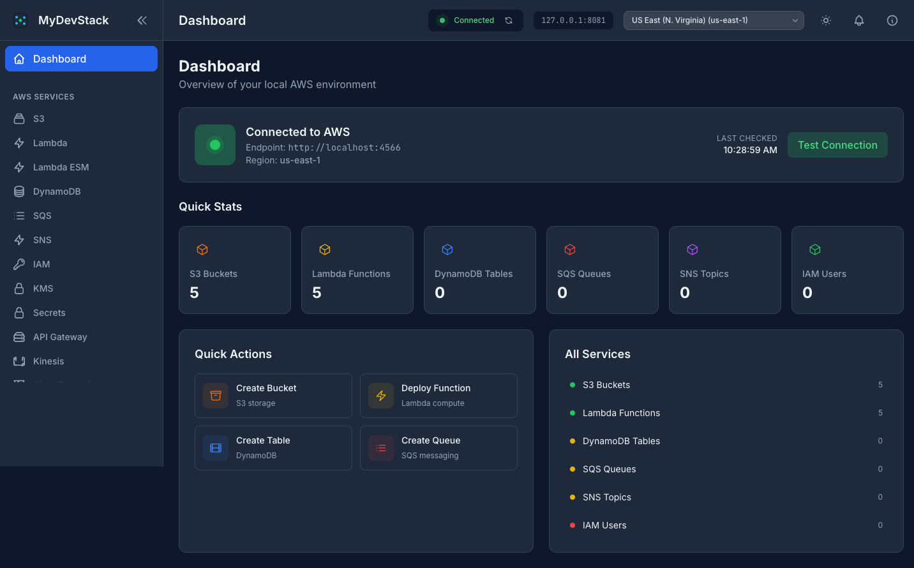
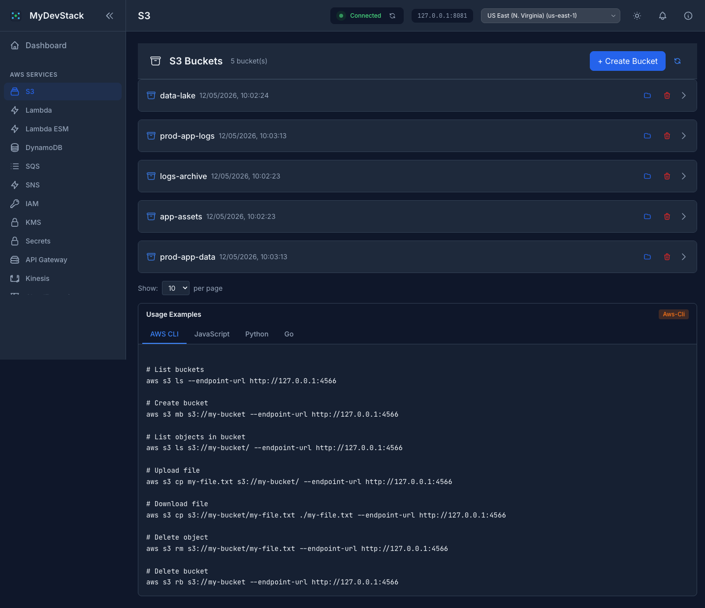
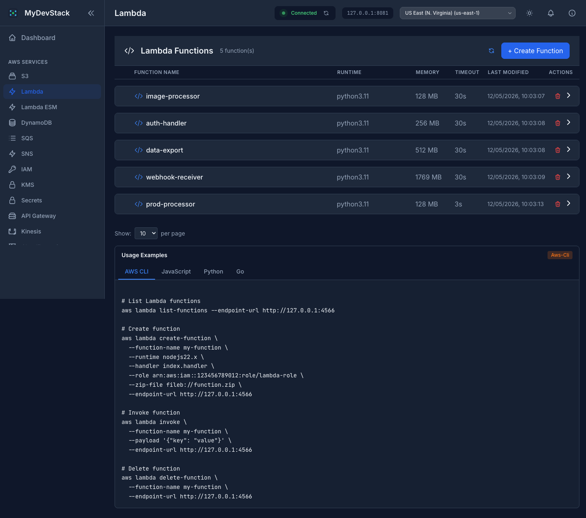
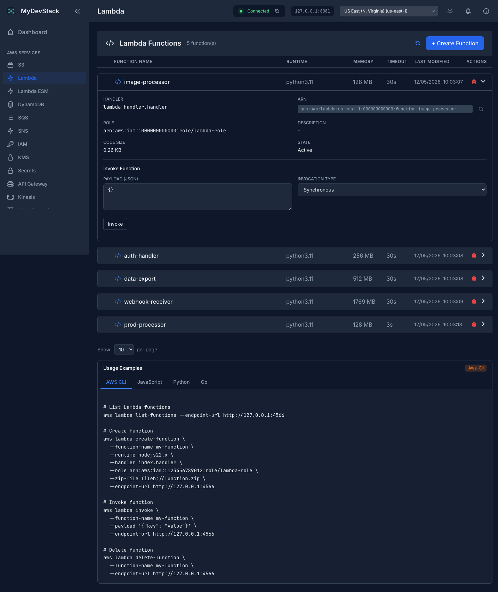
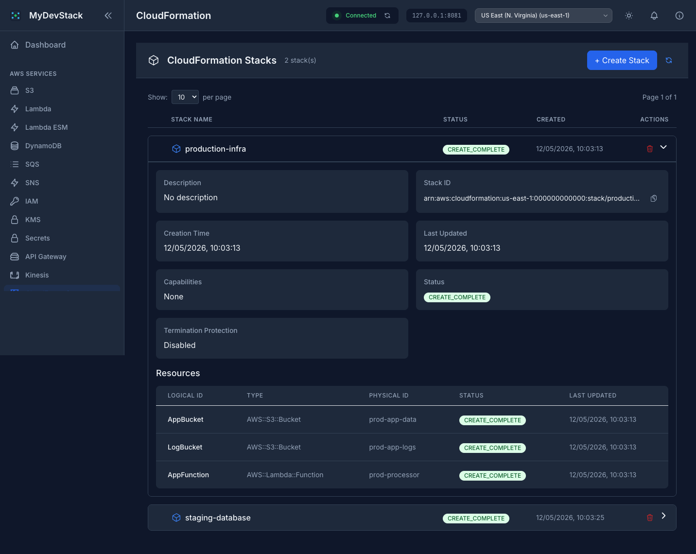
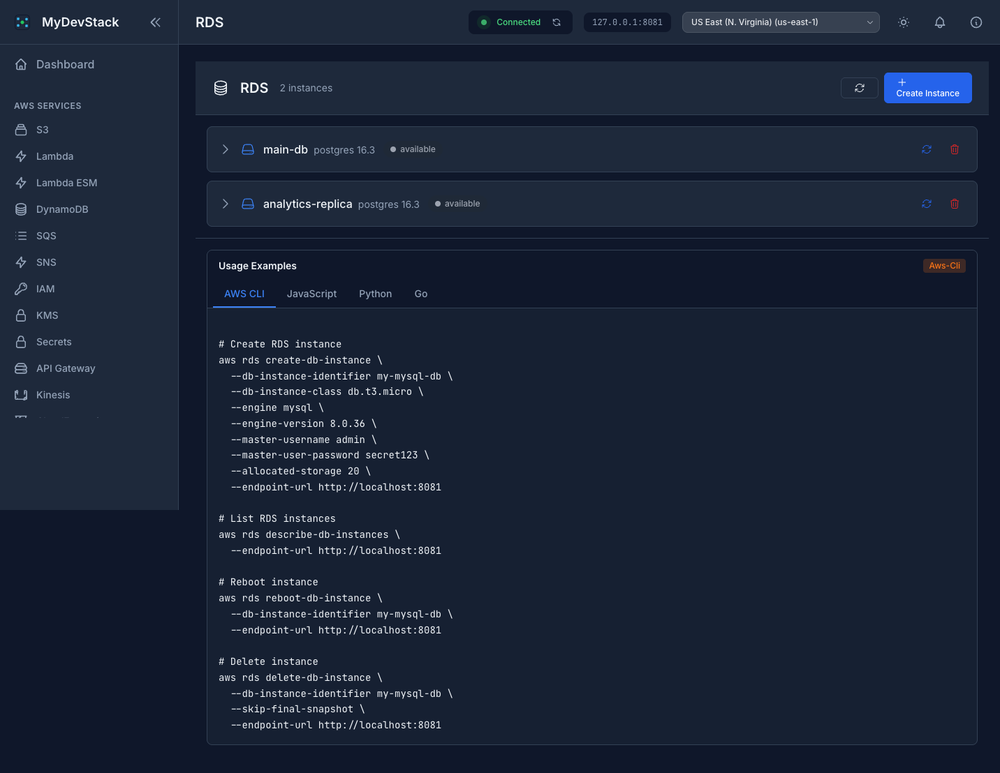
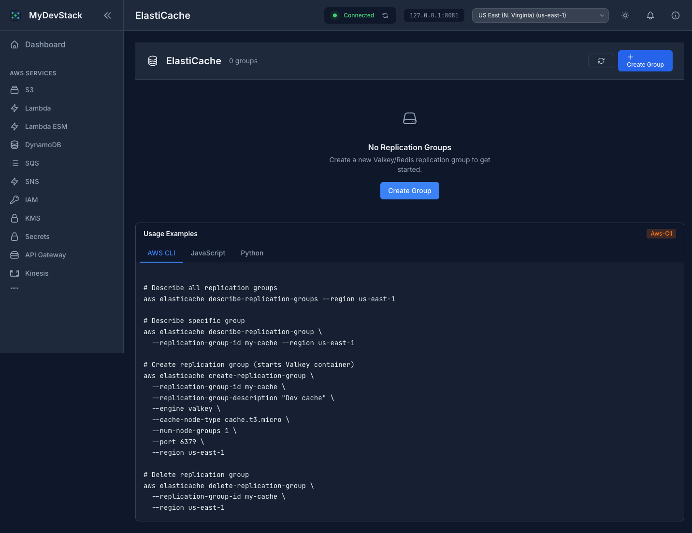
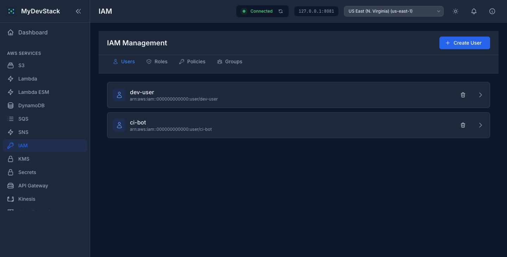
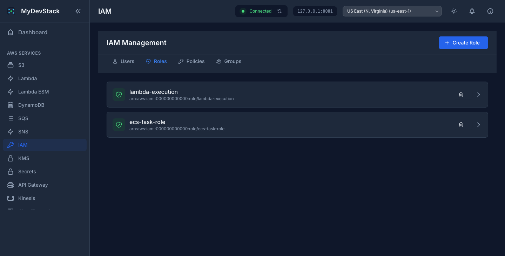

A modern, developer-friendly web interface for managing AWS services running locally via LocalStack, FloCi, and other AWS emulators.
Each service comes with a dedicated management interface, real-time status updates, CRUD operations, and embedded usage examples to help developers get started quickly.
Browse buckets, upload/download objects, generate pre-signed URLs, configure Lambda triggers and bucket policies.
Create and manage functions, edit configurations, invoke with custom payloads, view results in real-time.
Manage tables, explore data with scan/query, add and delete items, view stream records.
View queues, send and receive messages, inspect queue attributes and configuration.
Create topics, manage subscriptions across multiple protocols, publish messages with ease.
Manage users, roles, policies, groups. Generate keys, attach and detach policies visually.
Create and manage encryption keys, encrypt and decrypt data, view key policies.
Store and retrieve secrets, edit values, view secret history in a clean interface.
Create streams, put records, view shards and retrieve data records interactively.
Manage parameters with different tiers, view values and history, organize by path.
Create and manage state machines, start and monitor executions, view execution history.
Create and manage stacks, view resources and outputs, support for JSON and YAML templates.
Create and manage database instances, reboot, delete, and monitor instance status.
Manage Valkey/Redis replication groups, create and delete cache clusters.
Create HTTP and REST APIs, manage routes, integrations, stages, and deployments.
... and more being added
Every service provides an intuitive management interface with accordion details, interactive forms, and built-in usage examples for AWS CLI, JavaScript, Python, and Go.
The dashboard provides an at-a-glance overview of your local AWS environment, including connection status, resource counts across all services, and quick-action shortcuts for the most common operations. Monitor your entire sandbox from a single entry point.

Browse and manage your buckets. Upload and download objects, generate pre-signed URLs, configure triggers and policies. Usage examples available for every service.

View all functions at a glance with runtime, memory, and timeout columns. Expand any function to see details, copy ARN, and invoke with custom payloads.


Create and manage stacks with JSON or YAML templates. Expand any stack to inspect resources, outputs, and drift status. Built-in validation catches errors before deployment.

Manage database instances and cache clusters directly from the interface. Every service page includes usage examples in multiple programming languages.


Full IAM management with tabbed interface for Users, Roles, Policies, and Groups. Manage access keys, attach and detach policies, all without leaving the browser.


Navigate 18+ AWS services through a clean, responsive interface. Search, filter, and manage resources without leaving the browser.
Create, read, update, and delete resources through intuitive forms and modals. Real-time validation and error feedback.
Every service includes built-in usage examples in AWS CLI, JavaScript, Python, and Go. Copy and paste to get started immediately.
Modern dark-first design with light mode toggle for a polished experience.
Adjustable items-per-page selector across all list views. Sort by columns, navigate with Previous/Next buttons, and always know your position.
Go backend proxy authenticates all requests. KMS encryption/decryption, IAM policy management, and Secrets Manager are first-class features.
MyDevStack runs as a single Docker image that the frontend with a REST API proxy, connecting to any AWS-compatible local emulator.
Works with LocalStack, FloCi, MiniStack, or any AWS-compatible local endpoint.
One command starts the proxy Service and frontend. The proxy handles all AWS SDK communication.
Navigate to any service, manage resources, and copy code examples — all without the terminal.
Get MyDevStack running in seconds with a single command. Just point it at your local AWS emulator and you're ready to go.
services: mydevstack: image: beabys/mydevstack:latest container_name: mydevstack ports: # UI - "3000:3000" # Proxy port for AWS emulator connection - "8081:8081" environment: AWS_ENDPOINT: http://host.docker.internal:4566 AWS_ACCESS_KEY_ID: test AWS_SECRET_ACCESS_KEY: test PROXY_PORT: 8081 restart: unless-stopped healthcheck: test: ["CMD", "curl", "-f", "http://localhost:3000/health"] interval: 30s timeout: 10s retries: 3 start_period: 10s networks: - mydevstack-network networks: mydevstack-network: name: mydevstack-network driver: bridge
docker run -d \ --name mydevstack \ -p 3000:3000 \ -p 8081:8081 \ -e AWS_ENDPOINT=http://host.docker.internal:4566 \ -e AWS_ACCESS_KEY_ID=test \ -e AWS_SECRET_ACCESS_KEY=test \ -e PROXY_PORT=8081 \ --restart unless-stopped \ beabys/mydevstack:latest
Before starting MyDevStack, make sure you have an AWS emulator running locally —
such as LocalStack,
ministack or
FloCi on port 4566.
MyDevStack connects to it through the configured AWS_ENDPOINT.
MyDevStack is an open-source project built and maintained in my spare time. If you find it valuable for your development workflow, consider supporting its continued evolution. Contributions of any kind — whether code contributions, bug reports, feature suggestions, or financial support — help ensure the project remains active and improves over time.
Buy Me a Coffee